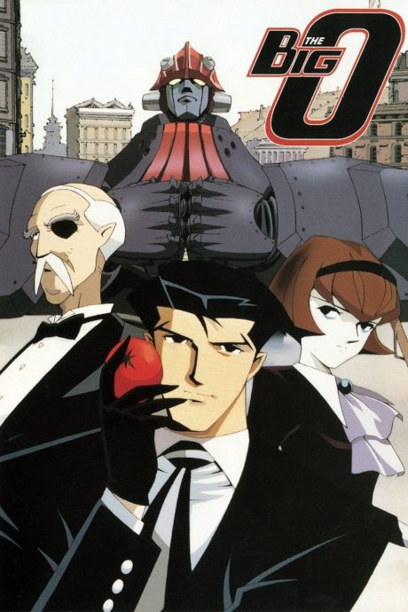

DARLING in the FRANXX
ダーリン・イン・ザ・フランキス
In a future where children pilot giant robots in pairs, Hiro, a boy who can't pilot, meets Zero Two, a girl with horns.
An original anime, so there's no book to continue with.
6.9AniList score
—Animeter, no votes yet
24episodes
Rate it or report where you stopped
Filler
No filler: all 24 episodes are canon. 24 anime-original episodes count as canon.
Episodes24
Canon24
Filler0
Mixed0
Sources: Anime Filler List
More like DARLING in the FRANXX
 Original8.3
Original8.3
 Original8.5
Original8.5
Original6.9
Guilty Crown Novel ahead8.3
Novel ahead8.3
 Done8.5
Done8.5
Original7.4
Casshern Sins
Original7.4 Original8.5
Original8.5
 Manga Ch. 1588.2
Manga Ch. 1588.2
 Film7.9
Film7.9
 Original7.7
Original7.7
 Manga Ch. 728.3
Manga Ch. 728.3